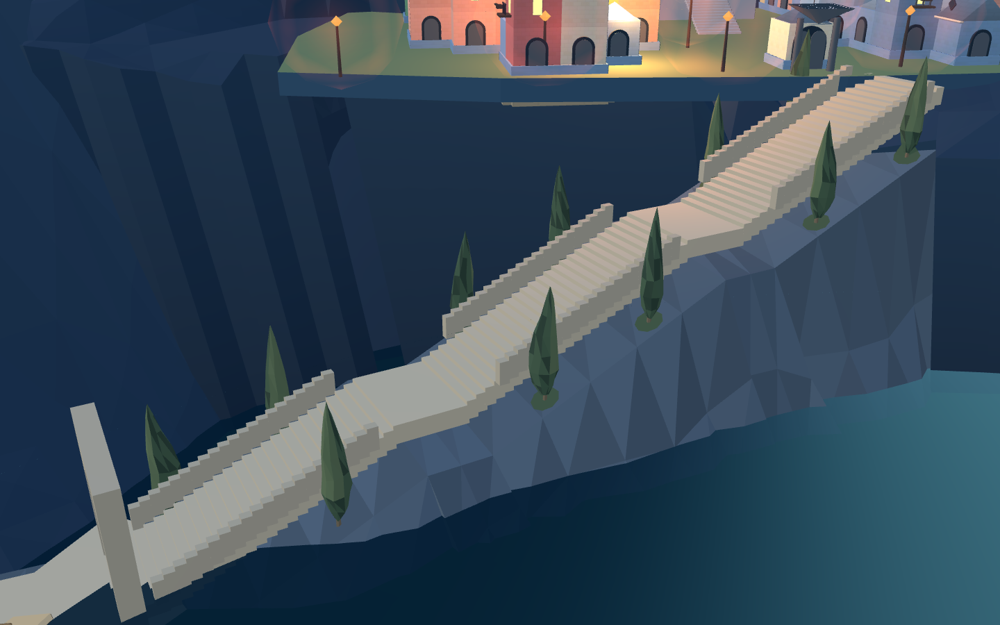
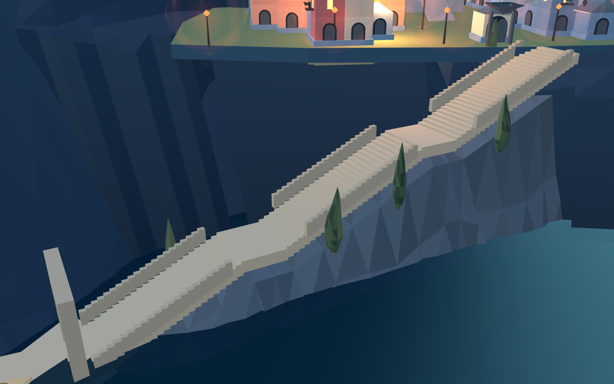
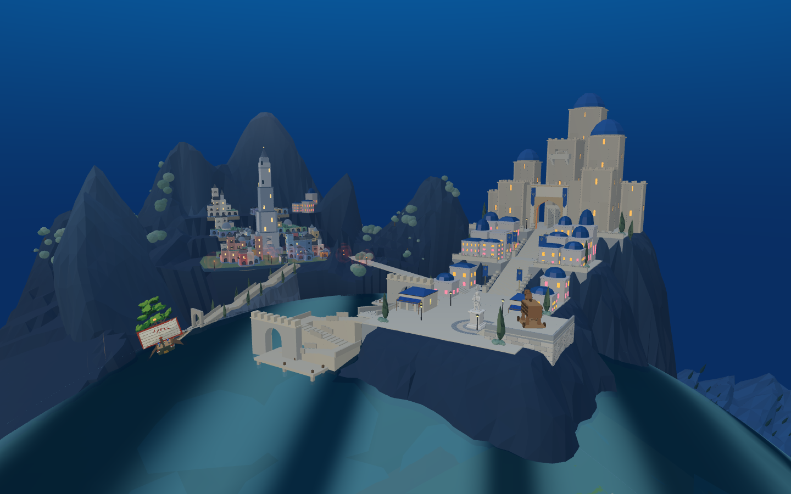
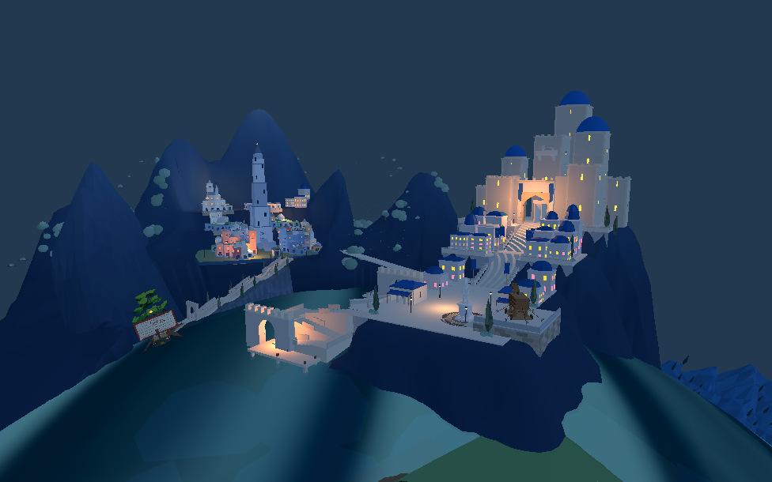

复用既有 Blender 柏树模型。近景检查后重做了种植岩肩，避免树木挂在陡直岩壁上；最终保留 12 处落点，并避开通路、建筑与无支撑区域。该批已接入 8931 原游戏候选并同步 Godot。

第一轮：落点偏向陡壁，未接受

当前：拓宽岩肩后重新布点


加入植被后，Web 旧港通路 1,473 点检查通过；Godot 旧港入城 90 段、新前港到广场 202 段实兵演练通过。12 株柏树与地被合并为 5 个网格、2,019 个三角形。
布点及支撑记录 · Godot 对象核对 · 旧港实兵结果
整体未完成：当前只完善这条岸坡和一处新城山坡，不能代表整片山林已经优化。老城基础与山体的连接、连续滨水建筑以及运输/战斗仍需继续，默认布局未切换。